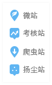

<%@include file="../includeJsCss.html" %>
<!--[if IE 8]> <html lang="en" class="ie8"> <![endif]-->
<!--[if !IE]><!-->
<!DOCTYPE html>
<html>

	<head>
		<meta charset="utf-8">
		<meta name="viewport" content="width=device-width, initial-scale=1.0">
		<title>蛙鸣科技 | 监测数据分析</title>
		<link rel="shortcut icon" href="../../resources/img/favicon.ico">
		<link rel="stylesheet" href="../../resources/plugins/vue/vue-table.css" />
		<link rel="stylesheet" href="../../resources/css/rewcssChrome.css" />

		<script type="text/javascript" src="../../resources/js/report/Init_Reporttime.js"></script>
		<!--引用插件使用-->
		<link rel="stylesheet" href="../../resources/plugins/bmap/DrawingManager_min.css" />
		<link href="../../resources/plugins/bmap/TrafficControl_min.css" rel="stylesheet" type="text/css" />
		<script type="text/javascript" src="http://api.map.baidu.com/api?v=2.0&ak=uF99UKCfyDpn0dOjZcDtNd3u8ANCNI0D"></script>

		<script type="text/javascript" src="../../resources/plugins/bmap/DistanceTool_min.js"></script>
		<script type="text/javascript" src="../../resources/plugins/bmap/DrawingManager_min.js"></script>
		<script type="text/javascript" src="../../resources/plugins/bmap/TrafficControl_min.js"></script>
		<script type="text/javascript" src="../../resources/plugins/echarts-3.1.10/dist/echarts.min.3.7.0.js "></script>
		<script type="text/javascript" src="../../resources/js/common/com-map.js"></script>
		<script type="text/javascript">
			var stationId = "${requestScope.stationId}";
			var stationType = "${requestScope.stationType}";
			var stechType = "${requestScope.stechType}";
		</script>
	</head>

	<body id="content" class="f-s-12 ovh">
		<%@include file="../V1/topMenu.html" %>
		<div class='panel-left'>
			<div class="pd10 magin10 chunk-set">
				<div class="form-inline">
					<div class="form-group">
						<label class="m-l-10 m-r-5 ">污染物类型</label>
						<input type="checkbox" v-model="selecttoggle" v-bind:true-value="1" v-bind:false-value="0"><label class="m-r-10 m-t-5">全部 </label>
						<input type="checkbox" value="aqi2" v-model="querypollutionType"><label class="m-r-10 m-t-5">AQI</label>
						<input type="checkbox" value="aqi" v-model="querypollutionType"><label class="m-r-10 m-t-5">标准AQI</label>
						<input type="checkbox" value="pm25" v-model="querypollutionType"><label class="m-r-10 m-t-5">PM<sub>2.5</sub></label>
						<input type="checkbox" value="pm10" v-model="querypollutionType"><label class="m-r-10 m-t-5">PM<sub>10</sub></label>
						<input type="checkbox" value="so2" v-model="querypollutionType"><label class="m-r-10 m-t-5">SO<sub>2</sub></label>
						<input type="checkbox" value="no2" v-model="querypollutionType"><label class="m-r-10 m-t-5">NO<sub>2</sub></label>
						<input type="checkbox" value="co" v-model="querypollutionType"><label class="m-r-10 m-t-5">CO</label>
						<input type="checkbox" value="o3" v-model="querypollutionType"><label class="m-r-10 m-t-5">O<sub>3</sub></label>
						<input type="checkbox" value="no" v-model="querypollutionType"><label class="m-r-10 m-t-5">NO</label>
					</div>
					<div class="form-group">
						<label class="m-r-5 m-l-5">起止时间</label>
						<div class="input-group input-daterange">
							<input id="day_startTime" v-model="day_startTime" class="form-control Wdate w150" type="text" onclick="WdatePicker({dateFmt:'yyyy-MM-dd HH:mm',maxDate:'%y-%M-%d %H:%m',onpicked:function() { $(this).blur(); }})" placeholder="开始时间" />
							<span class="input-group-addon" style="width:13px; padding: 0 5px;">-</span>
							<input id="day_endTime" v-model="day_endTime" class="form-control Wdate w150" type="text" onclick="WdatePicker({dateFmt:'yyyy-MM-dd HH:mm',maxDate:'%y-%M-%d %H:{%m+1}:%s',onpicked:function() { $(this).blur(); }})" placeholder="结束时间" />
						</div>
						<input type="hidden" name="97DateTimeFmt" id="97DateTimeFmt" value="yyyy-MM-dd HH:mm" />
					</div>
					<div class="form-group pull-right">
						<input type="button" class="btn btn-info pull-right" @click="search" value="查询" />
					</div>
				</div>
			</div>
			<div class="time_btn m-l-10">
				<div class="btn-group">
					<button class="btn btn-white btn-xs btn-time" id="1minute" @click="showType(1)">1分钟</button>
					<button class="btn btn-white btn-xs btn-time" id="5minute" @click="showType(2)">5分钟均值</button>
					<button class="btn btn-white btn-xs btn-time" id="10minute" @click="showType(3)">10分钟均值</button>
					<button class="btn btn-white btn-tabinfo btn-xs btn-time" id="hour" @click="showType(4)">1小时均值</button>
					<button class="btn btn-white btn-xs" id="diplayWin" @click="diplayWin">风</button>
				</div>
                <button class="tooltip-control pull-right m-l-10" :class="{'tooltip-mshowActive':btnStatus['tooltipMultid'].isActive,'tooltip-mshow':btnStatus['tooltipMultid'].noActive}" @click="btnStatusChange2('tooltipMultid','tooltipDand')"
                        title="多站数据提示"></button>
                <button class="tooltip-control pull-right" :class="{'tooltip-dshowActive':btnStatus['tooltipDand'].isActive,'tooltip-dshow':btnStatus['tooltipDand'].noActive}" @click="btnStatusChange2('tooltipDand','tooltipMultid')" title="单站数据提示"></button>
			</div>
			<div class="magin10 surver_echarts" id="allCharts">
				<div class='none' id="char-aqi2">
					<div class='ibox float-e-margins'>
						<div class='ibox-content'>
							<div class='echarts' style='width: 100%;height: 320px' id="dataChart-aqi2"></div>
						</div>
					</div>
				</div>
				<div class='none' id="char-aqi">
					<div class='ibox float-e-margins'>
						<div class='ibox-content'>
							<div class='echarts' style='width: 100%;height: 320px' id="dataChart-aqi"></div>
						</div>
					</div>
				</div>
				<div class='none' id="char-pm25">
					<div class='ibox float-e-margins'>
						<div class='ibox-content'>
							<div class='echarts' style='width: 100%;height: 320px' id="dataChart-pm25"></div>
						</div>
					</div>
				</div>
				<div class='none' id="char-pm10">
					<div class='ibox float-e-margins'>
						<div class='ibox-content'>
							<div class='echarts' style='width: 100%;height: 320px' id="dataChart-pm10"></div>
						</div>
					</div>
				</div>
				<div class='none' id="char-so2">
					<div class='ibox float-e-margins'>
						<div class='ibox-content'>
							<div class='echarts' style='width: 100%;height: 320px' id="dataChart-so2"></div>
						</div>
					</div>
				</div>
				<div class='none' id="char-no2">
					<div class='ibox float-e-margins'>
						<div class='ibox-content'>
							<div class='echarts' style='width: 100%;height: 320px' id="dataChart-no2"></div>
						</div>
					</div>
				</div>
				<div class='none' id="char-co">
					<div class='ibox float-e-margins'>
						<div class='ibox-content'>
							<div class='echarts' style='width: 100%;height: 320px' id="dataChart-co"></div>
						</div>
					</div>
				</div>
				<div class='none' id="char-o3">
					<div class='ibox float-e-margins'>
						<div class='ibox-content'>
							<div class='echarts' style='width: 100%;height: 320px' id="dataChart-o3"></div>
						</div>
					</div>
				</div>
				<div class='none' id="char-no">
					<div class='ibox float-e-margins'>
						<div class='ibox-content'>
							<div class='echarts' style='width: 100%;height: 320px' id="dataChart-no"></div>
						</div>
					</div>
				</div>
			</div>
		</div>
		<div class="panel-right rel-list-zcontent-show" style="z-index: 99999998">
			<div class="rel-btn-toogle" @click="toogleContianer">
				<span class="btn-jt-right"></span>
			</div>
			<div class="text-center post-rel">
                <input class="form-control icon-search" v-model="stationIdOrName" type="text" @keyup.enter="searchStation(stationIdOrName)" @keyup="checkStationInfo($event)"  placeholder="请输入站点编号或名称"/>
                <ul class="survey-search-down-list" v-show="isShowDownList">
                    <li v-for="item in search_down_list" @click="searchStation(item.id + '&' + item.text)">{{item.text}}</li>
                </ul>
			</div>
			<!--类型下拉开始-->
			<div class="category-surverD text-center m-t-10" id="category-station">
				<a class="drop-down-a" @click="popWindwoShow('categ_popwindow')"> 类型</a>
				<div class="categ_popwindow" id="categ_popwindow" style="display: none;">
					<span class="popw_icon_triangle_bootom"></span>
					<!--站点详情开始-->
					<div class="categ_li">
						<div class="list-type-surver">
							<input type="checkbox" v-model="kh_all" @click="clk_kh_all" v-bind:true-value="1" v-bind:false-value="0" />
							<label class="m-r-10">考核站</label>
						</div>
						<ul class="list-s-name-surver">
							<li v-for="item in khstationList"><input type="checkbox" value="{{item.id}}" v-model="khli" />
								<label class="m-r-10">{{item.name}}</label></li>
						</ul>
						<div class="list-type-surver">
							<input type="checkbox" v-model="wz_all" @click="clk_wz_all" v-bind:true-value="1" v-bind:false-value="0" />
							<label class="m-r-10">微站</label>
						</div>
						<ul class="list-s-name-surver">
							<li v-for="item in wzstationList"><input type="checkbox" value="{{item.id}}" v-model="wzli" />
								<label class="m-r-10">{{item.name}}</label></li>
						</ul>
						<div class="list-type-surver">
							<%--扬尘站--%>
							<li v-for="item in ycstationList"><input type="checkbox" value="{{item.id}}" v-model="ycli" />
								<label class="m-r-10">{{item.name}}</label></li>
						</div>
						<div class="list-type-surver">
							<input type="checkbox" v-model="pc_all" @click="clk_pc_all" v-bind:true-value="1" v-bind:false-value="0" />
							<label class="m-r-10">爬虫站</label>
						</div>
						<ul class="list-s-name-surver">
							<li v-for="item in pcstationList"><input type="checkbox" value="{{item.id}}" v-model="pcli" />
								<label class="m-r-10">{{item.name}}</label></li>
						</ul>
						<hr class="list-inline" />
						<div class="list-type-surver">
							<input type="checkbox" v-model="district_all" @click="clk_district_all" v-bind:true-value="1" v-bind:false-value="0" />
							<label class="m-r-10">行政区</label>
						</div>
						<ul class="list-s-name-surver">
							<li v-for="item in districtList"><input type="checkbox" value="{{item.id}}" v-model="districtli" />
								<label class="m-r-10">{{item.name}}</label></li>
						</ul>
					</div>
					<!--站点详情结束-->
					<div class="categ_2btn">
						<button class="btn btn-info btn-xs text-center col-sm-5 pull-left m-t-10" @click="queryStations">确定
                </button>
						<button class="btn btn-white btn-xs text-center col-sm-5 pull-right m-t-10" @click="resiteSelStations">重置
                </button>
					</div>
				</div>
			</div>
			<button class="btn pull-right m-t-10 width-85" :class="{'btn-info':mapOpenStatus.isActive,'btn-white':mapOpenStatus.noActive}" @click="openMap">地图圈选</button>
			<!--类型下拉结束-->
			<!--<div class="category-surverD m-l-10 text-center" id="category-cSelstation">
<a class="drop-down-a">圈选站点<i class="icon_react icon_react_up"></i></a>
</div>-->
			<div class="m-t-10">
				当前已选站点<span class="g9">（上限20）</span>：<b class="gf60" v-html="selectedTo.length"></b>
			</div>
			<div class="m-t-10 m-b-10">
				扩大半径：
				<%-- <input type="checkbox" class="va-m" @click="threeKM" v-model="threeKilometre" disabled="{{selectedTo.length != 1}}"/><label :class="{'g3':threeKisActive.isActive,'gc':threeKisActive.noActive}"> 三公里</label> --%>
				<select class="form-control " id="threeKMSel" v-model="threeKilometre" @change="threeKM" disabled="{{selectedTo.length != 1}}">
					<option value="0">请选择</option>
					<option value="500">500米</option>
					<option value="1000">1公里</option>
					<option value="1500">1.5公里</option>
					<option value="2000">2公里</option>
					<option value="2500">2.5公里</option>
					<option value="3000">3公里</option>
					<option value="4000">4公里</option>
				</select>
			</div>
			<div class="vuetabletable-loadanimation clear" id="station_info_list" style="overflow-y: auto;">
				<vuetable v-ref:vuetable api-url="${requestScope.coreApiContextPath}/monitor/stationtype" show-Pagination="showPagination" load-on-start="false" pagination-path="" :fields="fields" :multi-sort="true" :selected-to="selectedTo" :chk-num="chkNum" table-class="table" ascending-icon="glyphicon glyphicon-chevron-up" descending-icon="glyphicon glyphicon-chevron-down" pagination-class="" pagination-info-class="" pagination-component-class="" :append-params="params" :per-page="perPage" wrapper-class="vuetable-wrapper" table-wrapper=".vuetable-wrapper" loading-class="loading"></vuetable>
				<script type="text/javascript">
					var windowheight = $(window).height(),
						echartsAll_height = windowheight - 120,
						vtable_height = windowheight - 200;
					$("#station_info_list").css("height", vtable_height + 'px');
					$("#allCharts").css("height", echartsAll_height + 'px');
					$(window).resize(function() {
						windowheight = $(window).height();
						echartsAll_height = windowheight - 110;
						vtable_height = windowheight - 200;
						$("#station_info_list").css("height", vtable_height + 'px');
						$("#allCharts").css("height", echartsAll_height + 'px');
					});
				</script>
			</div>
		</div>
		<div id="mapHtml" style="display: none;">
			<div class="tooltip-control mapbtn-danxActive post-abs map-Btnsurver-abs mapbtn-danxActive" title="点选站点"></div>
			<div class="tooltip-control post-abs map-Btnsurver-abs" :class="{'mapbtn-circlexActive':btnStatus['mapbtnCirclex'].isActive,'mapbtn-circlex':btnStatus['mapbtnCirclex'].noActive}" onclick="openDrawingManager()" title="圈选地图站点"></div>
			<div class="tooltip-control post-abs map-Btnsurver-abs" :class="{'mapbtn-clearActive':btnStatus['mapbtnclear'].isActive,'mapbtn-clear':btnStatus['mapbtnclear'].noActive}" onclick="clearSelectMarker()" title="清除选中站点"></div>
			<div id="allmap" style="height:100%;"></div>
			<div class="map-surver-legend">
				
			</div>
		</div>
		<script type="text/javascript" src="../../resources/plugins/vue/vue-1.0.24.min.js"></script>
		<script type="text/javascript" src="../../resources/plugins/vue/vue-table.js"></script>
		<script src="../../resources/js/tools/surveyData.js"></script>

	</body>

</html>